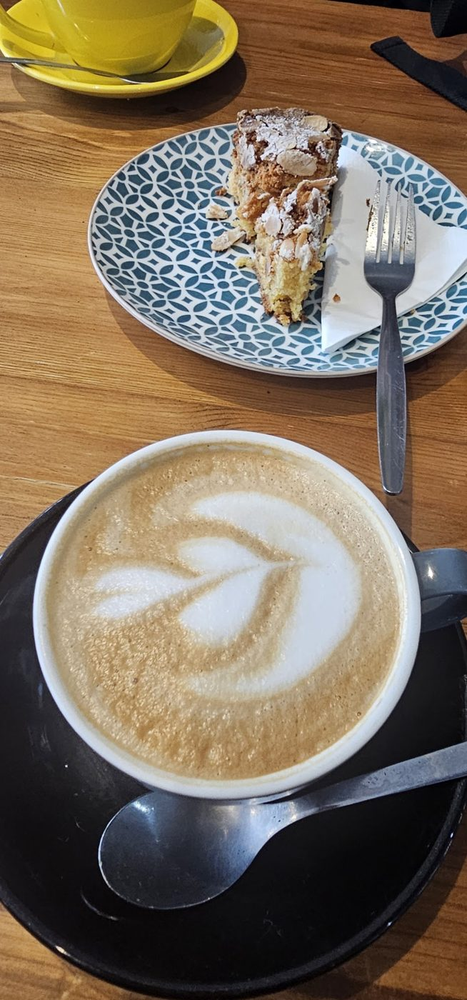
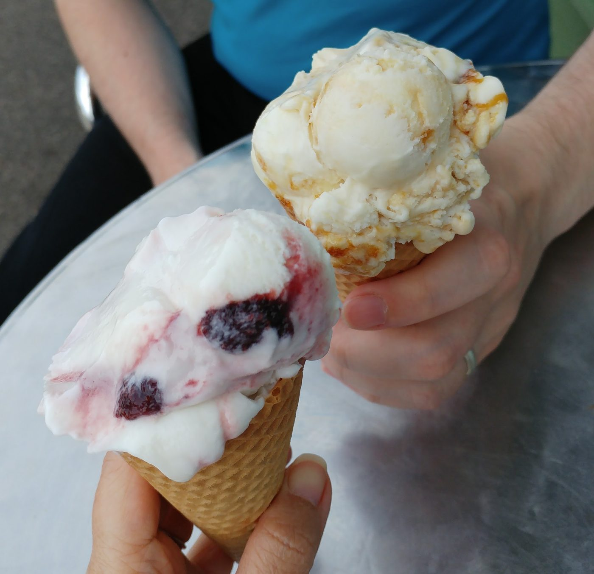

Coffee & cake
Espresso, cappuccino and lattes made the Italian way, with almond cake and other bakes alongside.
Italian delicatessen · Little Chalfont
A small Italian deli and café by Chalfont & Latimer station. Come in for a cappuccino and a slice of almond cake, stay for lunch, and leave with a cone.

What's on changes with the day and the season. Here's what people come back for.
4.6
out of 5 from 113 Google reviews
“Nice Italian coffee, food and gelato shop with lovely interior and kind people.”
“Outstanding authentic home cooked Italian food and excellent service.”
“What an incredible place with delicious food and the best ice cream!”
Read more on TripAdvisor, Facebook and Beand.
| Tuesday | 8am – 5:30pm |
|---|---|
| Wednesday | 8am – 5:30pm |
| Thursday | 8am – 5:30pm |
| Friday | 8am – 5:30pm |
| Saturday | 8am – 5pm |
| Sunday | Closed |
| Monday | Closed |
Rated 5 out of 5, the top food hygiene rating. See it on the Food Standards Agency site or on UK Food Hygiene.